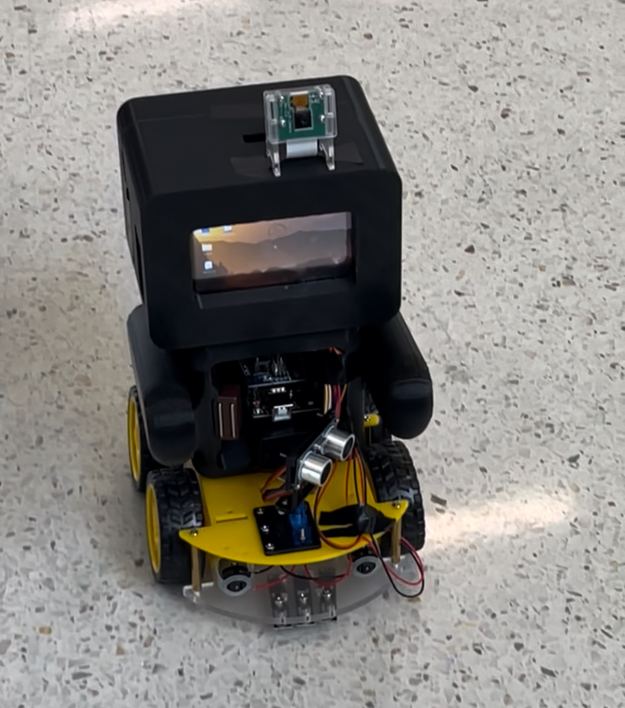

About Me
I am a developer passionate about video games, programming, and technology. I studied Engineering Technology with a minor in Business Management at San Jose State University and I'm currently taking additional courses in programming and game design.
Projects
-
3D Unity Platformer "Desert Munch"
-A simple Unity game with hazards and goal mechanics.
Play Demo
View on GitHub -
Home Security Robot - A face-detecting mobile security robot built with Python and
Raspberry Pi.
- Team built robot with motion, speech, and facial recognition
- Includes sensors and IoT component for home monitoring
View Project Demo Website

Skills
- Languages: C++, Python, Java, HTML/CSS, JavaScript, Swift
- Tools & Technologies: Unity, Git/GitHub, VS Code, Xcode, Arduino, Raspberry Pi, AWS, Firebase
- Concepts: Object-Oriented Programming (OOP), Agile Development, UI/UX Principles, Data Structures
- Other: Spanish (Fluent), Chinese (Beginner), Team Collaboration, Public Speaking
Contact Information
- Email: Ramirezleslie14@icloud.com
- LinkedIn: Leslie Ramirez
- GitHub: leslieramirez.github.io